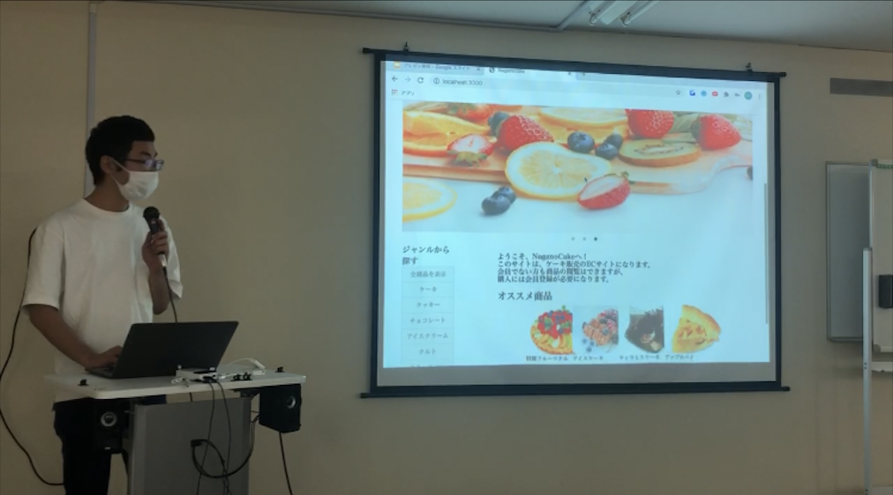
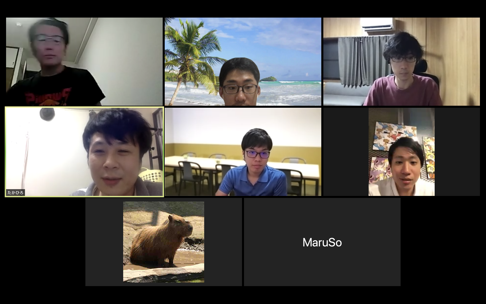

東野陽生 Portfolio Site
About me
About me
基本情報
東野 陽生（ひがしの はるき）1995年5月21日生まれ (25歳)
大阪府堺市出身
経歴
-
・2014年4月 ：立命館大学文学部入学
落語研究会に入りお笑いに明け暮れる。３年の時に部長となり、落語の全国大会ではトップ10の成績に入りました。
学内での公演のみならず、京都を中心に大阪・滋賀など関西圏で出張公演も部で行っていました。年間150件〜200件の出張公演の依頼を頂き、京都新聞にも取り上げて頂きました。 -
・2018年3月 ：立命館大学文学部卒業
・同年に奈良県王寺町役場に就職「無駄なプライドがなく、メンタル強そう」 という理由でタスクが同期の中で一番多い課に配属。 タスクが多い中、町施設の貸し出し及び管理を紙の台帳から、データで管理するようにし、外部からもチェック可能に仕様を変更しました。結果、使用者にとっても利用が楽になったと意見を頂き、タスクを減らす事にも成功しました。
- ・2019年4月 ：別の課に移動
-
町の体育館利用者数とその売上が下がっていた為、それらの向上が求められた。
まず、どの時間帯ごとの人数と年齢層のデータをとった結果、午前中が高齢者の利用が突出して多く、利用出来ていない団体が複数いる事が分かりました。
そこで、午前中の料金を上げて、午後の料金を下げる事で午前中に使用している何団体かが午後の使用に移り、その空いたスペースを利用出来ていなかった団体に提供が出来ました。
それによって利用者数と売上は共に前年比より10％向上し、又お客様の満足度も向上しました。
学習したプログラミングスキル
2020年3月1日から現在まで継続して学習を続けています。
- ・HTML, CSS, SCSS
- ・PHP
- ・Ruby, Ruby on Rails
- ・Git, GitHub
なぜ公務員を辞めてまでエンジニアになったのか
プログラミングを通じてまだまだアナログな社会を変えたいからです。
前職を通じて、仕事場だけでなく、社会ではたくさんアナログな事が多いと痛感しました。そんなアナログで苦労している方々にプログラミングを通して問題を解決したいと感じた為、エンジニアになりたいと感じました。
前職を通じて、仕事場だけでなく、社会ではたくさんアナログな事が多いと痛感しました。そんなアナログで苦労している方々にプログラミングを通して問題を解決したいと感じた為、エンジニアになりたいと感じました。
自己PR
1.行動力
私には目的を達成する為に動く行動力があります。
ポートフォリオである漫才ネタ作成アプリ（ネタサク）を作る為に、キングオブコントとM-1グランプリ出場しました。興味がある事に対しては、多くの人が尻込みする事もやる行動力があります。
このような目的を達成する為の行動力はエンジニアとして働かせて頂く際にも活きてくると思います。
ポートフォリオである漫才ネタ作成アプリ（ネタサク）を作る為に、キングオブコントとM-1グランプリ出場しました。興味がある事に対しては、多くの人が尻込みする事もやる行動力があります。
このような目的を達成する為の行動力はエンジニアとして働かせて頂く際にも活きてくると思います。
2.コツコツと努力が出来る
私は夢や目標に向かってコツコツと努力が出来ます。
学習した事はアウトプットを心掛け、Qiitaに記事を投稿する他、LT登壇を行って「チーム開発で学んだ事」やもう一方の登壇では、「ポートフォリオの紹介」の発表を行いました。
また、上記とは別イベントの「ポートフォリオ品評会」では、実際に来て頂いた皆さんに私のポートフォリオを使って頂いて、フィードバックを頂いて改善も行いました。
そして、Twitterには日々の学習記録を毎日記載しています。
このコツコツと努力出来る所はエンジニアとして働かせて頂く際にも活きてくると思います。
学習した事はアウトプットを心掛け、Qiitaに記事を投稿する他、LT登壇を行って「チーム開発で学んだ事」やもう一方の登壇では、「ポートフォリオの紹介」の発表を行いました。
また、上記とは別イベントの「ポートフォリオ品評会」では、実際に来て頂いた皆さんに私のポートフォリオを使って頂いて、フィードバックを頂いて改善も行いました。
そして、Twitterには日々の学習記録を毎日記載しています。
このコツコツと努力出来る所はエンジニアとして働かせて頂く際にも活きてくると思います。
3.やり切る力
私にはやり切る力があります。困難な事があっても日々乗り越えて来ました。
前職で上司が病気休暇で８ヶ月間おらず、係が僕と１つ年下の人しかおらず、その年下の人も途中体調を崩した中でも、僕は日々の業務をやり切りました。また、スクールのチーム開発で１人が途中離脱したのですが、その人の予定業務は全て僕がやり切りました。
このやり切る力はエンジニアとして働く際にも活きてくると思います。
前職で上司が病気休暇で８ヶ月間おらず、係が僕と１つ年下の人しかおらず、その年下の人も途中体調を崩した中でも、僕は日々の業務をやり切りました。また、スクールのチーム開発で１人が途中離脱したのですが、その人の予定業務は全て僕がやり切りました。
このやり切る力はエンジニアとして働く際にも活きてくると思います。
Ruby on Rails
Ruby on Rails
ネタをサクッと１分で作成。「ネタサク」！
ポートフォリオ品評会

アプリの概要
-
ネタサク
- 私は大学時代落語研究会に所属していて、よくお笑いのネタを作る時に、「１からネタ作るの難しいなぁ、ネタの設定と展開を誰か考えてくれたら楽やのになぁ」と考えてました。 そこで私は、選択した設定のネタの展開ごとに、ボケを選択するだけで漫才が出来る機能があれば、ネタ作りがすごく楽になると考え、このアプリを作りました。 このアプリがあれば、ネタを作った事がない人でも気軽にネタを作る事が出来ます。
こだわりポイント
- ・１分で漫才のネタが作成出来る
- ・ユーザーが投稿した全ネタ見る事が出来る
- ・実際にアプリを作る事で基礎文法の知識の定着が出来たと実感
- ・20人以上の方々にアプリを使って頂き、ご指摘を頂いてリファクタリングや仕様を改善
- ・このアプリをYoutubeで紹介
- ・AWSへデプロイ成功
ユーザーの感想
- ・直感的にどのように使うか分かりづらい → トップページに機能が収まるように修正
- ・重複して書かれたコードが多いcontrollerがある。 → リファクタリングして４割コード量削減
- ・Twitterのようにみんなのネタが見られるともっと良い → 見れるように改善
ソースコード
GitHubチーム開発（Rails）
チーム開発
ケーキ屋さんのECサイト
LT登壇
アプリの概要
4人1組による共同開発を経験しました。
- ・プログラミングスクールのカリキュラムでチーム開発を経験
- ・メンターさん＋4人チームで共同開発で制作
- ・管理者側の全ページ及びトップページを担当
チーム開発で学んだ事
- ・話し合う事の大切さ
- ・開発の流れが理解出来た事
- ・人にコードの説明をする時は、なんとなくの理解ではいけないという事
こだわりポイント
- ・初対面の方々30名の前でLT登壇をオフラインイベントで行い、「チーム開発で学んだ事」を発表
- ・誰かの作業が行き詰まっていた時は、みんなで大丈夫？と声を掛け合ってました
- ・ローカル環境でbranch を切って開発，プルリク，コンフリクトの解消の流れを学習
- ・WBSを使ったタスク管理。SlackやZoomを使用してメンバーとコミュニケーション。
- ・編集、削除の権限を投稿者だけに
- →Qiita(編集、削除の権限を投稿者だけに)
ソースコード
GitHubOthers
Others
Zoom もくもく会
オフライン交流会

Zoomもくもく会
- ・所属サロン内で毎日21時にもくもく会を開催。
- ・15分ほどで，学習の進捗状況、明日の目標など意見交換を行う。
- ・毎日開催する事で，自分がサボらない環境をつくる。
- ・目標を毎日宣言する事で、やらざるを得ない環境を作る。
→自ら努力できる環境を工夫して作り上げていく事ができます。
オフライン交流会
- ・メンバーとプログラミングに関する情報交換をして刺激をたくさんもらえた。
- ・誰かがつまずいている時はみんなでフォローし合う関係がより強固になった。
- ・現役エンジニアの方とも専門的な話が出来た。
- ・悩んでるのは1人じゃないと安心した。
- ・次の交流会主催に立候補したが、コロナで開催は未定です。
→物怖じしない性格、コミュニケーション能力があります